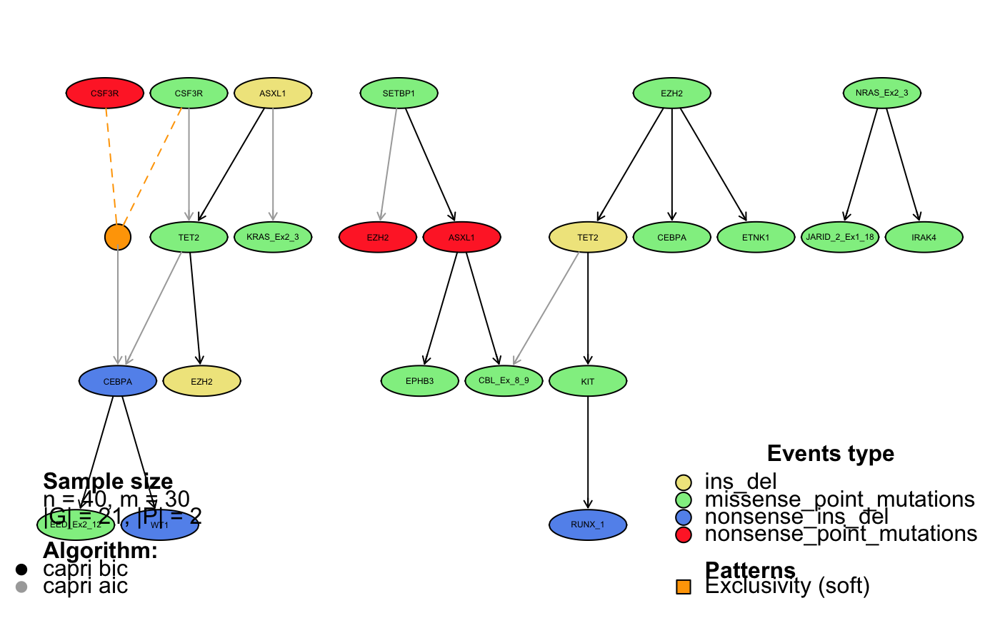

Plots a progression model from a recostructed dataset. For details and examples regarding the visualization of an inferred model, we refer to the Vignette Section 7.
tronco.plot( x, models = names(x$model), fontsize = NA, height = 2, width = 3, height.logic = 1, pf = FALSE, disconnected = FALSE, scale.nodes = NA, title = as.description(x), confidence = NA, p.min = 0.05, legend = TRUE, legend.cex = 1, edge.cex = 1, label.edge.size = NA, expand = TRUE, genes = NULL, relations.filter = NA, edge.color = "black", pathways.color = "Set1", file = NA, legend.pos = "bottom", pathways = NULL, lwd = 3, samples.annotation = NA, export.igraph = FALSE, create.new.dev = TRUE, ... )
| x | A reconstructed model (the output of the inference by a tronco function) |
|---|---|
| models | A vector containing the names of the algorithms used (caprese, capri_bic, etc) |
| fontsize | For node names. Default NA for automatic rescaling |
| height | Proportion node height - node width. Default height 2 |
| width | Proportion node height - node width. Default width 2 |
| height.logic | Height of logical nodes. Defaul 1 |
| pf | Should I print Prima Facie? Default False |
| disconnected | Should I print disconnected nodes? Default False |
| scale.nodes | Node scaling coefficient (based on node frequency). Default NA (autoscale) |
| title | Title of the plot. Default as.description(x) |
| confidence | Should I add confidence informations? No if NA |
| p.min | p-value cutoff. Default automatic |
| legend | Should I visualise the legend? |
| legend.cex | CEX value for legend. Default 1.0 |
| edge.cex | CEX value for edge labels. Default 1.0 |
| label.edge.size | Size of edge labels. Default NA for automatic rescaling |
| expand | Should I expand hypotheses? Default TRUE |
| genes | Visualise only genes in this list. Default NULL, visualise all. |
| relations.filter | Filter relations to dispaly according to this functions. Default NA |
| edge.color | Edge color. Default 'black' |
| pathways.color | RColorBrewer colorser for patways. Default 'Set1'. |
| file | String containing filename for PDF output. If NA no PDF output will be provided |
| legend.pos | Legend position. Default 'bottom', |
| pathways | A vector containing pathways information as described in as.patterns() |
| lwd | Edge base lwd. Default 3 |
| samples.annotation | = List of samples to search for events in model |
| export.igraph | If TRUE export the generated igraph object |
| create.new.dev | If TRUE create a new graphical device when calling trono.plot. Set this to FALSE, e.g., if you do not wish to create a new device when executing the command with export.igraph = TRUE |
| ... | Additional arguments for RGraphviz plot function |
Information about the reconstructed model
#> *** Expanding hypotheses syntax as graph nodes: #> *** Rendering graphics #> Nodes with no incoming/outgoing edges will not be displayed. #> RGraphviz object prepared. #> Plotting graph and adding legends.#> Warning: metrica carattere sconosciuta per carattere 0xa#> Warning: metrica carattere sconosciuta per carattere 0xa#> Warning: metrica carattere sconosciuta per carattere 0xa#> Warning: metrica carattere sconosciuta per carattere 0xa#>